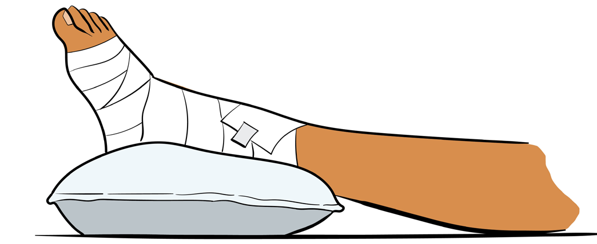

E - Elevation
Raise the injured part above the heart level to lower blood flow and swelling. You may support the injured part by pillow for comfort, as shown in Figure 2.11.

Figure 2.11: Elevated leg
R - Referral
Refer the injured person to professional medical practitioners such as medical doctor or physiotherapist for diagnosis and treatment.
Causes of injuries in sports
Majority of sports injuries have similar basic causative agents. The following are some causes:
(a) Poor training practices;
(b) Insufficient warm-up and cool down;
(c) Unsafe playing ground and facilities;
(d) Inappropriate use of equipment;
(e) Wearing improper sport attires;
(f) Fatigue;